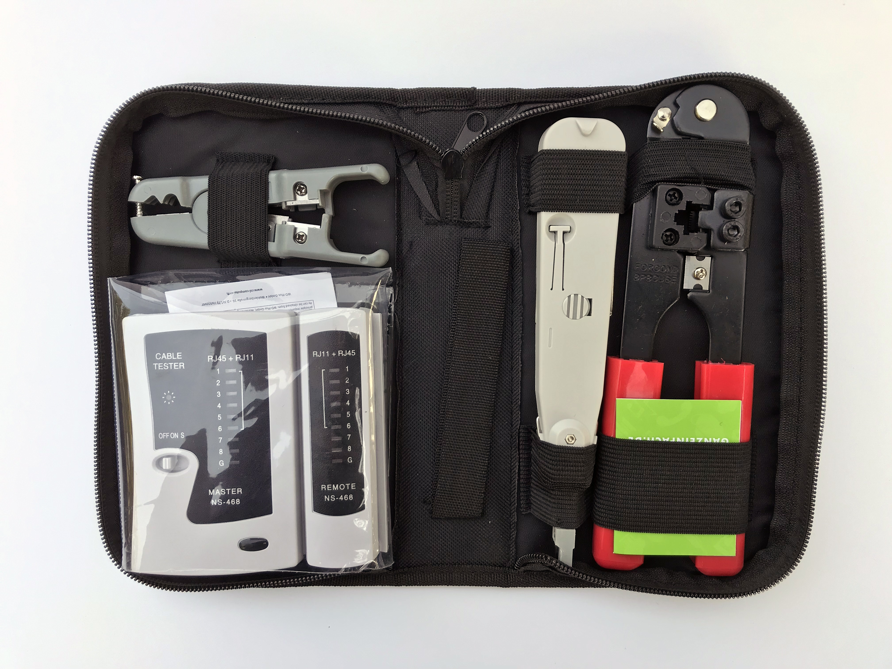
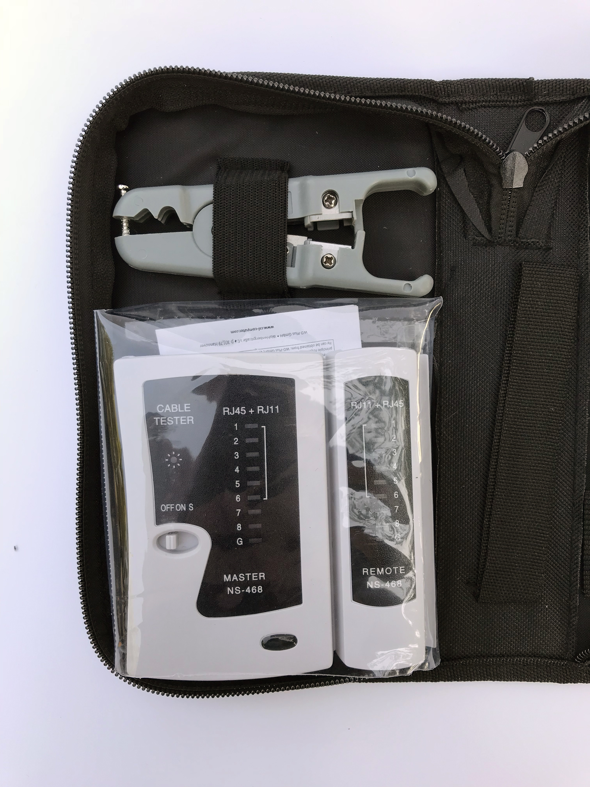
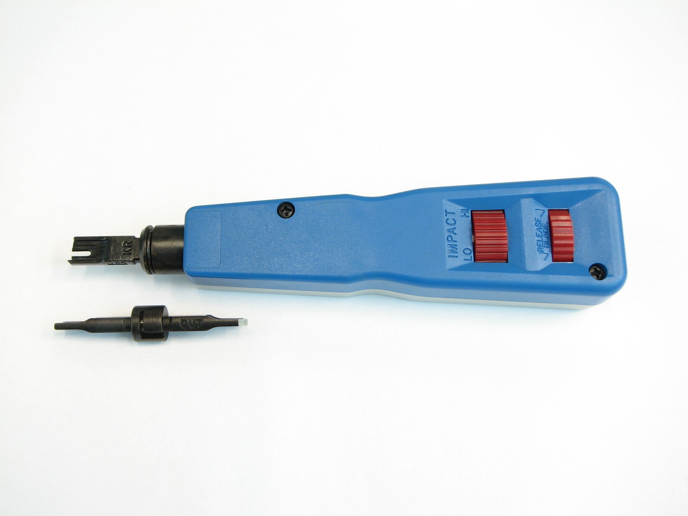
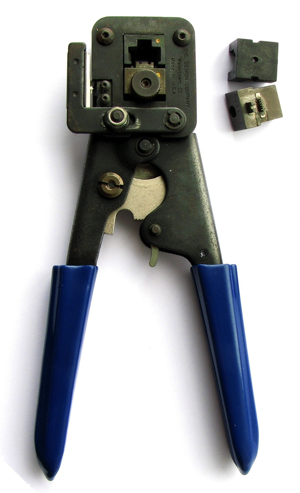
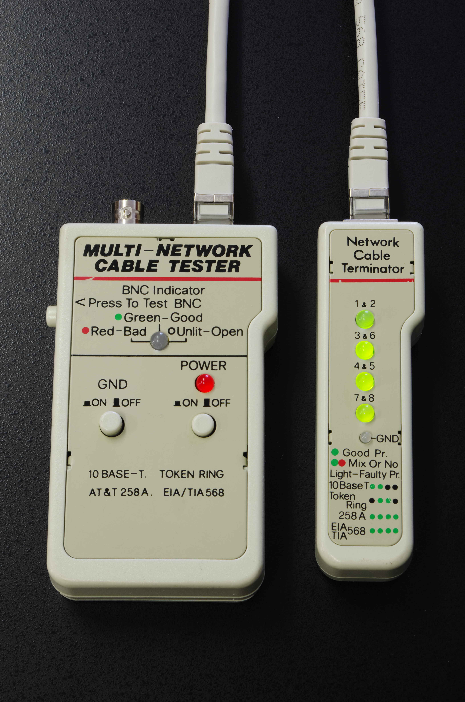
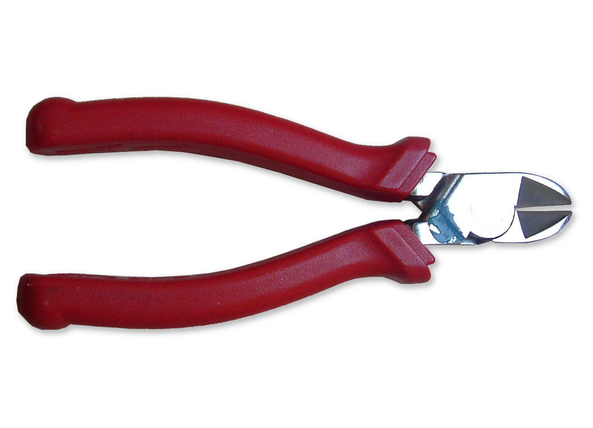
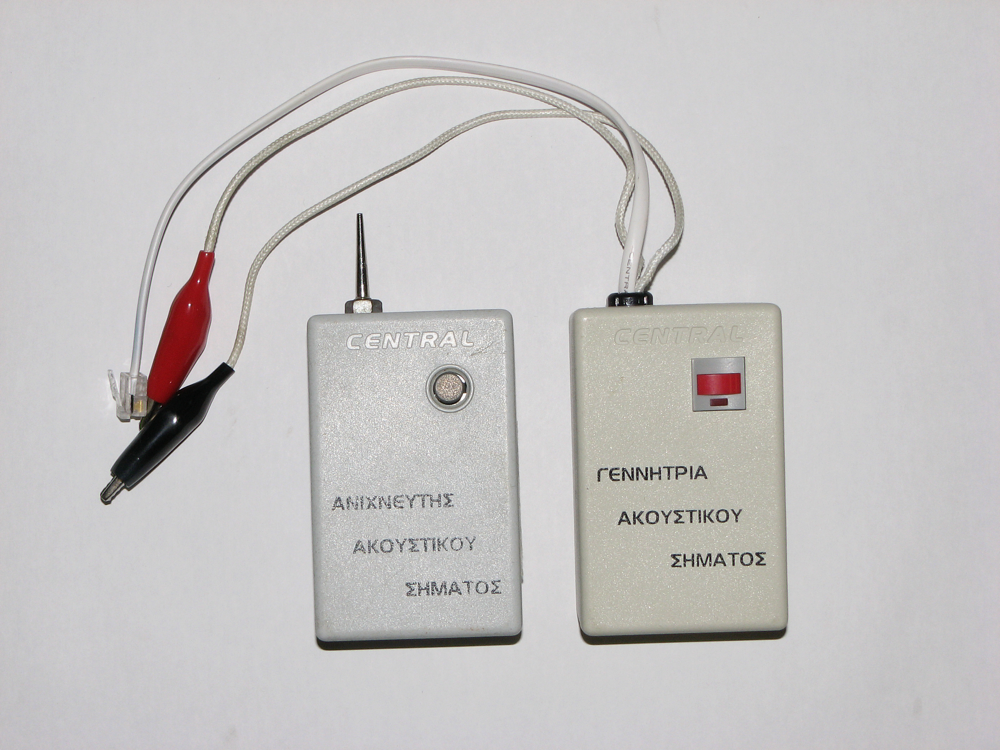
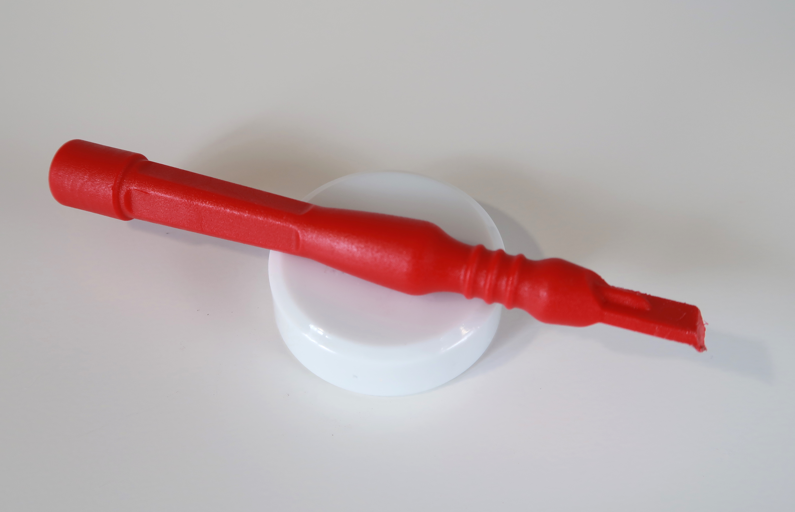

Herramientas de Campo en
Cableado Estructurado
El éxito de un enlace de telecomunicaciones de alta velocidad (Cat 5e, 6, 6A y Fibra) depende de la precisión del técnico en tres etapas fundamentales: Preparación, Terminación y Certificación. Conoce cada herramienta con su fotografía real, principio de operación y demostración en video.


Cat 5e/6 UTP: Giro suave a 1 vuelta (corte de cubierta exterior de PVC)
Pelacables / Desforradora (Cable Stripper)
Diseñada con cuchilla circular autoajustable para retirar la chaqueta exterior de PVC o LSZH (5 a 6 cm) sin rozar, morder ni marcar el aislamiento de polietileno de los 8 conductores internos de cobre.

El estándar omnipresente en redes LAN modernas. Filo recto para Keystones y Patch Panels de bloque 110. Cercena el sobrante al exterior en un clic.
Contactos dispuestos en ángulo de 45° respecto al conductor. Incluye mecanismo de tijeras laterales guiadas para un corte con menor resistencia.
Punta ancha para regletas M66 en distribución de voz analógica, centrales telefónicas PBX y distribución de pares troncales.
La Ponchadora de Impacto (Punch Down Tool)
Asegura la conectividad en la infraestructura física fija (paneles de parcheo, rosetas de pared y módulos Keystone Jack). Su mecanismo de resorte introduce a presión los alambres en ranuras IDC (Insulation Displacement Connector) y corta el excedente en un único movimiento sincronizado.

La Crimpeadora Modular (Crimping Tool)
Herramienta tipo prensa diseñada para ensamblar conectores modulares macho (RJ45 8P8C, RJ11 6P4C) en los extremos de cables de interconexión (Patch Cords).

Tester / Certificador (Cable Tester)
Equipo de diagnóstico compuesto por un transmisor maestro (TX) y un terminador remoto (RX). Valida la continuidad eléctrica pin a pin, mapeo de hilos (wiremap), pares cruzados, pares divididos (split pairs) y circuitos abiertos.
Herramientas Secundarias Esenciales en Campo
Dispositivos que marcan la diferencia entre un trabajo improvisado y una instalación profesional y certificable.

Corte de PrecisiónCortadora de Kevlar / Tijeras de Electricista
Hojas forjadas con microdentado antideslizante. Diseñadas para cortar el hilo de aramida (Kevlar) protector en cables de fibra óptica y realizar cortes al ras en conductores de cobre sin aplastar el núcleo.

Rastreo e IdentificaciónGenerador de Tonos y Sonda ("El Pollo")
Inyecta una señal de radiofrecuencia modulada en un conductor. La sonda con punta plástica capta el tono por inducción magnética sin perforar el cable, permitiendo rastrear e identificar líneas individuales en mazos sin etiquetar.

Mantenimiento y CorrecciónHerramienta Spudger y Gancho Extractor
Varilla dieléctrica aislante con punta plana y gancho metálico. Permite extraer o reacomodar hilos de cobre mal insertados en las hendiduras IDC sin fracturar los peines plásticos del jack ni producir cortocircuitos.